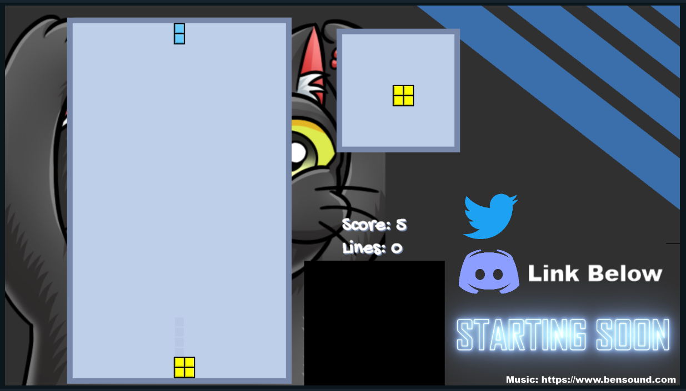
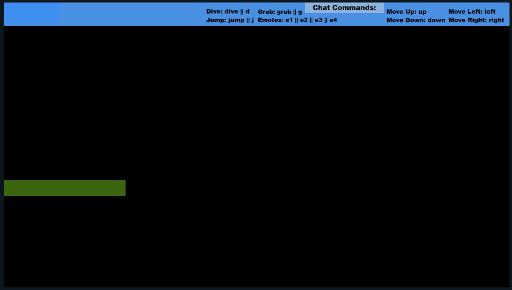

Twitch, a streaming platform, has offered many new and interesting ways for people to interact with others. To over simplify how the website works, a single entity, typically an individual, will streaming themselves performing something. This "something" can be virtually anything that adheres to the websites Terms of Service from video games to reacting to Yotube, or in the creative realm of dancing, drawing, creating music, or other performance mediums. While the person(s) stream, anyone can watch and interact with the streamer through a chatbox that would display to all other on-lookers and to the streamer, themselves. During the length of COVID-19's quarentine, I spent many hours streaming myself programming various simple, silly projects. The main focus for all of the projects that I developed was interactivity for the viewers that were typing in the chatbox. This proved rather difficult but not impossible. It was a very fun, interesting way to challenge myself to use the limitations of how the chatbox worked but provide a pleseant user experience that allowed chatters to interact more with the stream itself. Twitch's website is, in large part, used to platform playing video games therefore a lot of what I did centered around interacting with video games.

Making a chatbox interact with a video game in real time started with a chat bot which, after viewing a few tutorials online, I made myself. It was an incredibly simple bot that I ran on my local machine
that would simply take commands from the chatbox with a preface of "!" (ex. !up). These commands would then translate into keystrokes that would control the player-character in the video game. The first on my list
of games was Tetris. I did not write the Tetris game and outsourced code from open source codes on forums and simply rewrote sections to fit my need. The chatters could then type !up, !u, !down, !d, etc. in order
to play the game. One design issue that arose in the implementation of this was that there was a big delay between typing in the chat and what appeared on the screen. Not only did the bot have to read in the commands,
it then had to press the keys, which would then alter the gamestate, this gamestate was being recorded by a streaming software, Streamlabs, and broadcast to everyone over the internet. The entire process being handled
in real time but over the internet would make the users feel the input lag between typing and seeing it processed.
From there, I knew that future projects would not be able to consist of games that required fast reaction timing as there was a major input delay. So after giving it some thought, I chose a game that is predicated
on taking your time with actions and choosing your next move. The next video game of choice to interact with the chatbox was Pokemon Yellow. This was rather simple to implement with the existing code from the Tetris
project with a little alterations. With modern technology, people were able to take the games that existed on old game cartridges and port them onto the computer via emulators. Pokemon existing on emulator made this
project exponentially easier to execute. Emulators offer a small variety of ways to control the game and allow the users to bind inputs to any keyboard key they want. In order to easily allow the chatbox to interact
with Pokemon Yellow, I rebound all of the keys to very specific keystrokes so as the chatters would type in chat, it would press the keys on my keyboard and control the game. This method of playing Pokemon Yellow is,
for lack of better words, extremely chaotic albeit entertaining to watch. During the duration of this project, the chatters were able to beat the first main sections of the game and then, subsequently, delete the strongest
characters that got us there.. It was a very chaotic, fun project that propelled me into more intricate projects involving the same method.

After allowing the chatters to interact directly with the game, the next challenge that I drafted up was 'what if the chatters can alter the games while I play'. This process was much more involved
than having the chatters play the game directly. The first game that I thought about doing was the hot topic of the moment, Fall Guys. In Fall Guys, you control a "bean" and race to beat online opponents. Fall Guys ismap
a very simple game which allowed me to test out my idea. Fall Guys offers a very basic control scheme, forward, back, left, right, and jump. In the game, you can also control where the camera is looking. With this basic
control scheme, I used a similar bot to the Pokemon Yellow bot that accepted basic movement inputs with an additional input of jump and camera movement. Plaing the game proved rather difficult. Rather than previous iterations
of the projects where all of the chatters worked with me, they were now working against me. The Fall Guys character would bound around sporatically and randomly jet around left and right. Similarly to the
previous projects, this was not the most ideal way to play the game, however, it was very entertaining.
With the knowledge that the chatters can directly interfere with my gameplay, it was time to take it to the next logical conclusion, Dark Souls. Dark Souls is a game that defined its own genre by creating a universe
that was very unfair to the player but, at the same time, incredibly rewarding. I knew that the chat could control my movement, however, I felt that was rather simple given that Dark Souls was more 3D in movement and offered
much more to explore. Something that is rather unique to gaming on PC that offers a large amount of customizability is modding. Modding are, simply put, community alterations to a specific game that can add virtually anything
to the original game assuming it is allowed logically. One very specific mod that I sought out was a command line mod tool called "Dark Shell". "Dark Shell", unlike other tools, allowed me to directly run code on a command line
that directly influenced the game. This ability to run code directly on the game allowed me to take the inputs from the chatbox, process it through the chat bot, and execute a command that directly influenced the game. This
opened the doors for a large amount of insanity. Chatters could not turn on and off the gravity of the game, take away stat points in an RPG, remove my weapon, prevent the character from attacking, and so on. Adding this alteration,
to Dark Souls, which is already a frustrating game, made it exponentially more frustrating to play..
Although this marked the end of having chat change my game as I played or having them play a pre-existing game, this did not mark the end of chatters influencing a game. The next project involving this process took this methodology
way beyond anything previously done. The next project was to make a game specifically playable ONLY via chat. There is more on this in the Cat Game project page.